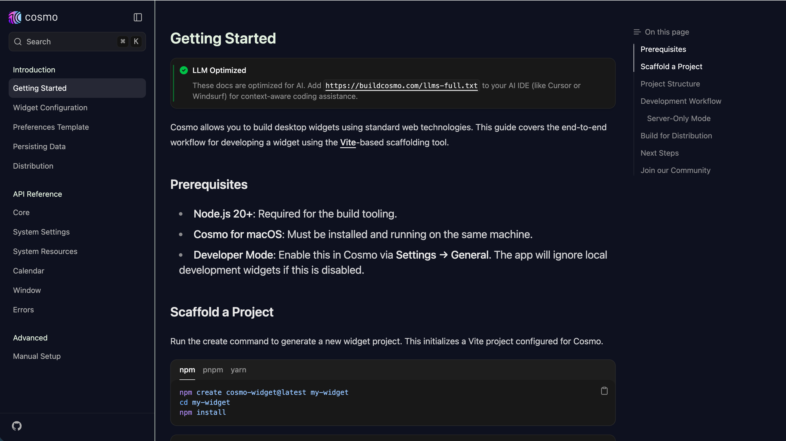
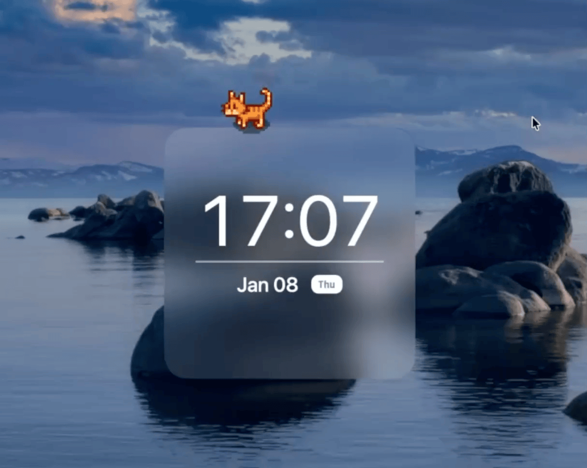

Overview
In Phase I, we focused on creating an intuitive platform to manage diverse personalization resources. As we researched the broader desktop experience, we found that the challenge goes beyond customization.
The Problem
01. Technical Barriers
Many customization enthusiasts have strong ideas but lack the coding skills needed to build widgets. Framworks, project structures, and deployment workflows make creation inaccessible to non-technical users.
02. Fragmented Workflows
Information is spread across apps, browser tabs, and desktop surfaces. Navigation is inefficient, and the desktop quickly becomes visually messy and cognitively overwhelming.
Opportunities
Analyzing these problems led us to define two major strategic opportunities for the next evolution of the desktop:
Non-Technical Creation
Enable users to create their own desktop features without needing to code.
Intelligent Navigation
Improve desktop-level information navigation through AI integration.
Design Insight
As AI improves in understanding natural language, reasoning through tasks, and handling execution, people no longer need to translate their intent into technical systems or fragmented workflows. AI can instead act as the bridge between what users want and how the system carries it out.
Future Blueprint
Transition from a simple customization tool to an AI-driven, intelligent, and adaptive desktop ecosystem.
Lowering the Barrier to Creation
To address the first problem, we created the AI Widget Creation Guide — a strategic framework that translates user needs, platform rules, and interaction principles into a structured guide that enables AI to turn natural-language ideas into usable desktop widgets.
The purpose of this document is to remove technical barriers. Instead of asking users to understand the tech stack, we provide structured context directly to AI. Users can simply describe their ideas in natural language, and the AI handles:
- Intent interpretation from natural language
- Widget layout generation with system styling
- Technical implementation details
- Deployment to the live desktop environment

This shifts widget creation from a coding task into a communication task. Users no longer need to think in terms of files; they only need to express what they want to make.
How It Works in Practice
"Create a minimalist clock widget with a pixel cat that I can interact with as it walks."

Works from Our Users
AI Desktop Agent
How could the desktop become a more intelligent interface for getting things done, instead of just a place where windows and files accumulate?
To explore this, we introduced a desktop-level AI agent approach through Cosmo Commands.
Cosmo Commands Beta
Instead of navigating through layers of apps, users can simply describe what they want to do. Cosmo then handles the steps and returns the result as a clean widget directly on the desktop.
✨ AI Automation
Automates navigation through browser sessions and returns exactamente what you need as a clean widget UI.
🤖 LLM Integration
Chat with ChatGPT, Claude, or Gemini directly from the desktop without constantly switching between tabs and apps.
check beta prototype
Reflection
This project helped clarify that the future of desktop experience is not just visual customization. It is about reducing friction between what users want and what the system requires.